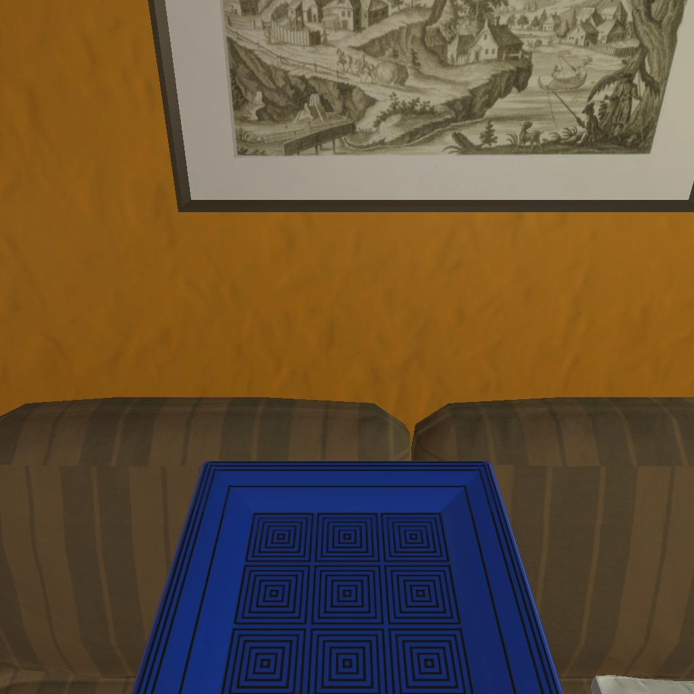

---------------------------------------------------------task: 3---------------------------------------------------------
--------------------------------------------------------------------------------------------------------------------------------------------------------------------
--------------------------------------------------------------------------------------------------------------------------------------------------------------------
Step:--------------------------------------------------------------------------17-------------------------------------------------------------------------------
----------------------------------------
VLM Prompt:
**Task**
Please perform as an embodied AI agent. Our final objective is to look at plate under the floorlamp. Below is the plan for completing the task, the current observation, alongside historical data and admissible actions for the next step. Please determine the best action for the next step!
**Plan**
Below is a detailed step-by-step plan to complete the task.
1. Find a plate.
2. Pick up the plate.
3. Locate a floorlamp.
4. Turn on the floorlamp.
5. Stand under the floorlamp with the plate in hand.
6. Look at the plate while standing under the floorlamp.
**Current Observation**
Displayed is an image capturing the current position of the agent.
Objects in The Image: ['picture frame', 'sofa', 'wall', 'optical illusion artwork']
**History Information**
Displayed are the previous observations with their corresponding actions.
State 0:
No history.
State 1:
1. Step Index in the Plan: 1
2. Objects: Television, Glass Table
3. Action: go to shelf 1
State 2:
1. Step Index in the Plan: 1
2. Objects: Television, TV Stand, Trash Bin
3. Action: go to shelf 3
State 3:
1. Step Index in the Plan: 2
2. Objects: Door, Shelf (number unspecified)
3. Action: go to shelf 5
State 4:
1. Step Index in the Plan: 1
2. Objects: Door, Shelving Unit, Shelf
3. Action: go to drawer 1
State 5:
1. Step Index in the Plan: 1
2. Objects: Bookshelf, Desk, Sofa, Floor Lamp
3. Action: go to shelf 2
State 6:
1. Step Index in the Plan: 2
2. Objects: Television, TV Stand, Trash Can, Cable
3. Action: go to coffeetable 1
State 7:
2. Step Index in the Plan: 2
3. Objects: Television, Glass Coffee Table, Garbage Bin, Electrical Outlet, Cable
4. Action: go to shelf 3
State 8:
1. Step Index in the Plan: 1
2. Objects: Door, Doorknob, Shelf, Wall, Floor
3. Action: go to shelf 4
State 9:
1. Step Index in the Plan: 1
2. Objects: Door, Shelving Unit
3. Action: go to shelf 5
State 10:
1. Step Index in the Plan: 1
2. Objects: Door, Staircase
3. Action: go to drawer 1
State 11:
1. Step Index in the Plan: Unknown
2. Objects: Floor Lamp, Bookshelf, Sofa, Coffee Table, End Table
3. Action: go to sidetable 2
State 12:
1. Step Index in the Plan: 1
2. Objects: Table, Papers, Blue Funnel, Blue Book, Side Table, Plate (not visible but inferred)
3. Action: take plate 3 from sidetable 2
State 13:
1. Step Index in the Plan: 2
2. Objects: Various Items, Plate (not visible but inferred to be with us)
3. Action: examine plate 3
State 14:
1. Step Index in the Plan: 3
2. Objects: Blue Vase, Papers, Blue Framed Artwork, Door, Wall, Table
3. Action: go to sofa 1
State 15:
1. Step Index in the Plan: 3
2. Objects: Couch, Framed Artwork, Wall, Patterned Carpet
3. Action: go to shelf 2
State 16:
1. Step Index in the Plan: 3
2. Objects: Television, TV Stand, Glass Table, Trash Can, Decorative Rug
3. Action: go to sofa 1
State 17:
1. Step Index in the Plan: 3
2. Objects: Picture Frame, Sofa, Wall, Plate (with a geometric pattern)
3. Action: go to sofa 1
**Admissible Actions**
(1): go to armchair 1
(2): go to garbagecan 1
(3): go to tvstand 1
(4): go to shelf 1
(5): go to sofa 1
(6): go to coffeetable 1
(7): go to sidetable 1
(8): go to sidetable 2
(9): go to drawer 1
(10): go to shelf 3
(11): go to shelf 4
(12): go to shelf 5
(13): put plate 3 in/on sofa 1
(14): examine plate 3
(15): examine sofa 1
**Analysis Guideline**
1. Analyze the history and current observation, and then determine our current step in the plan and our current place.
2. List all visible objects related to the task in the current observation, without summarizing any as "various items."
3. Analyze the objects in the current observation based on the history and the requirements for the current step, and then determine if we can complete the step with the current observation.
4. Analyze and decide on the most appropriate action to take.
5. Summarize the analysis using the following format: "Analysis: [The summarization of the analysis], The Most Appropriate Action: (i which is the integer.): [Selected action]"
**Notes**
1. We must complete each step of the plan in order and cannot skip steps when the previous ones are not finished.
2. For "Go to" actions listed as "go to xxx [n]", interpret this as there are n distinct actions available: "go to xxx 1", "go to xxx 2", ..., "go to xxx n". Select one specific action from these options instead of using "go to xxx [n]".
3. If receptacles such as drawers, cabinets, and so forth are closed in the current observation, we may try to open them.
4. Pay attention to synonyms and ensure clarity in the terms used.
5. We must determine and provide the single action which must be in the **Admissible Actions**.
6. If there is no history available, we are at the first step and the current place is "Unknown".
**Answer**
Please select the most suitable action by following the **Analysis Guideline**, keeping the above **Notes** in mind.
----------------------------------------
----------------------------------------
VLM Response:
Analysis: Based on the history, the agent has picked up the plate (Step 2) and is currently trying to locate a floorlamp (Step 3). In the current observation, the agent is facing a sofa and a wall with a picture frame, but there is no floorlamp visible. Considering the plan, the agent needs to locate a floorlamp to proceed to the next steps. Since none of the admissible actions directly involve finding or interacting with a floorlamp, the agent must select an action that could potentially reveal the location of a floorlamp or move to a vantage point that provides a better view of the room.
The Most Appropriate Action: (1): go to armchair 1
Choosing to go to the armchair may provide a new perspective of the room, potentially revealing the location of the floorlamp and allowing the agent to continue following the plan.
----------------------------------------
----------------------------------------
>>> Refine VLM Response and Get Pure Action: go to armchair 1
Choosing to go to the armchair may provide a new perspective of the room, potentially revealing the location of the floorlamp and allowing the agent to continue following the plan
----------------------------------------
-----------------------------------------------------------------
Running time: 10.764436960220337 seconds
Total Money: 0
-----------------------------------------------------------------
-----------------------------------------------------------------
Summarization Prompt:
**Context**
Analysis: Since there is no history information, we are at the first step in the plan, which is to find a statue. The current place is unknown. In the current observation, we see a floorlamp next to an armchair with a small table that has a small object on it, which could potentially be the statue we are looking for. Since the plan requires us to find a statue first and it appears there might be one on the table next to the armchair, we should investigate this object to determine if it is the statue we need.
The Most Appropriate Action: (1): go to armchair 1
**Summary**
1. Step Index in the Plan: 1
2. Objects: Floorlamp, Armchair, Small Table, Small Object (potential statue)
3. Action: go to armchair 1
**Context**
Analysis: Based on the history, the agent has picked up the plate (Step 2) and is currently trying to locate a floorlamp (Step 3). In the current observation, the agent is facing a sofa and a wall with a picture frame, but there is no floorlamp visible. Considering the plan, the agent needs to locate a floorlamp to proceed to the next steps. Since none of the admissible actions directly involve finding or interacting with a floorlamp, the agent must select an action that could potentially reveal the location of a floorlamp or move to a vantage point that provides a better view of the room.
The Most Appropriate Action: (1): go to armchair 1
Choosing to go to the armchair may provide a new perspective of the room, potentially revealing the location of the floorlamp and allowing the agent to continue following the plan.
Please summarize the context by following above examples when providing the summary, and ensure that only the summary is included, without any extra explanation.
**Summary**
-----------------------------------------------------------------
-----------------------------------------------------------------
Summarization Response:
1. Step Index in the Plan: 3
2. Objects: Sofa, Wall, Picture Frame
3. Action: go to armchair 1
-----------------------------------------------------------------
-----------------------------------------------------------------
Text Observation:Nothing happens.
-----------------------------------------------------------------
UNSUCCEED